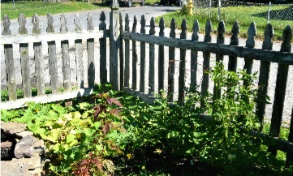
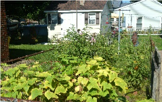

Vegetable Gardens for Seniors
For most of us, gardening provides a welcome sojourn in the natural world, a sanctuary that promises relief from the challenges of life. Yet many feel the need to give it up as they become less physically able. Gardening can enrich the life of the senior gardener in many ways - physically, mentally, and spiritually.
Vegetable gardens are a wonderful idea for seniors because they can do more than provide tasty produce—gardening can improve health, save money and even boost mood.
| Vegetable Garden Size Examples | |
|---|---|
| Small Vegetable Garden | Large Vegetable Garden |
|  |  |
If you know a senior in need of some help or your a senior yourself that needs some help please contact us to talk to a representative and schedule an appointment